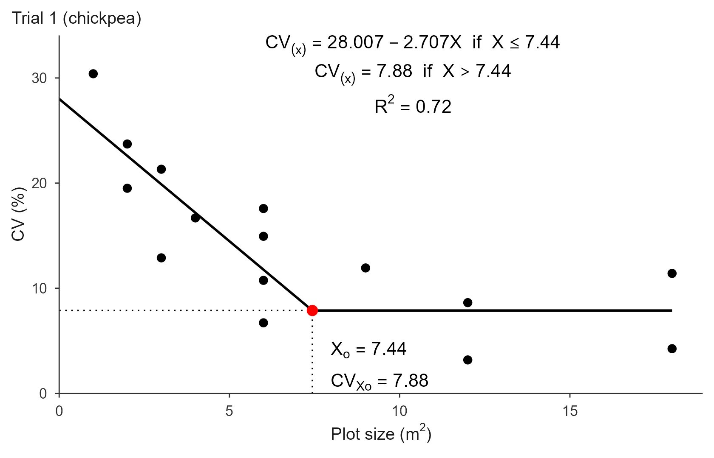
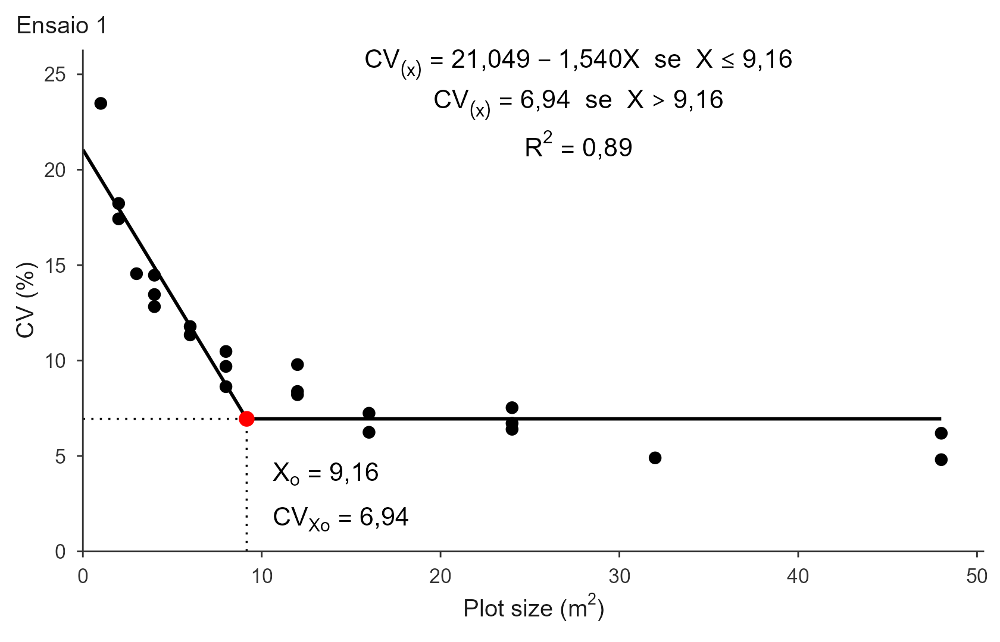
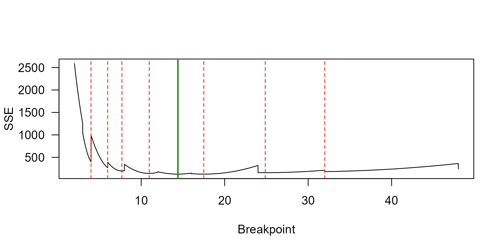

lrp.Rmd
library(trialSize)In a uniformity trial, adjacent basic experimental units (BEU) are
grouped into plots of increasing size X, and the
coefficient of variation CV(X) is computed among plots of
each size. The CV falls as plots get larger, but the gain shrinks: past
a certain size, extra area buys almost no precision. The Linear Response
Plateau model formalizes that as two joined straight lines,
The first segment falls with slope ; the second is flat at the plateau . The join between them is the estimate of interest: is the optimal plot size and is the CV expected at that size. From the model,
Fitting a broken line is awkward for general-purpose nonlinear least
squares. The model has a kink, and the residual sum of squares (SSE) is
a stepped function of the breakpoint: moving
between two observed plot sizes does not change which points fall in
each segment, so the SSE stays flat and its derivative is zero.
Gradient-based fitters such as nls() and
nlsLM() stall on those flat steps and return whichever
basin their starting value happened to land in.
fit_lrp() avoids this by profiling the
breakpoint. It walks a fine grid of candidate values for
;
at each candidate the model becomes linear, so the coefficients come
from ordinary least squares. The candidate with the smallest SSE wins.
There are no starting values and no convergence failures, and the result
is the global least-squares optimum by construction.
That does not make the breakpoint unambiguous, though: the profile may have several basins that fit almost equally well. See Competing breakpoints below.
Original method: Paranaíba, P. F., Ferreira, D. F. & Morais, A. R. (2009). Tamanho ótimo de parcelas experimentais: proposição de métodos de estimação. Revista Brasileira de Biometria, 27(2), 255-268.
Validation used here: Cargnelutti Filho, A., Loro, M. V., Ortiz, V. M. & Andretta, J. A. (2025). Determinação do tamanho de parcela para avaliar a massa de parte aérea de grão-de-bico. Revista Vivências, 21(43), 499-513.
The examples use the chickpea uniformity trials of the validation
article: a 6 × 6 grid of 1 m² BEU per trial, grouped into 15 plot
shapes. X is the plot size in BEU and
CV1–CV3 are the CVs of trials 1 to 3.
X <- c(1, 2, 2, 3, 3, 4, 6, 6, 6, 6, 9, 12, 12, 18, 18)
CV1 <- c(30.40, 19.51, 23.72, 12.89, 21.32, 16.69, 6.71, 10.75,
17.58, 14.94, 11.93, 3.18, 8.63, 4.25, 11.41)
CV2 <- c(34.79, 29.44, 26.45, 26.35, 31.74, 25.01, 21.44, 22.86,
28.93, 16.17, 27.29, 19.89, 16.85, 26.53, 14.70)
CV3 <- c(31.12, 20.87, 29.09, 20.02, 28.04, 19.97, 10.74, 19.28,
18.18, 26.46, 17.41, 11.51, 17.96, 9.18, 19.17)Note that X repeats: several shapes share the same size
(four different shapes of 6 BEU, for instance). Supply one CV per shape,
never the mean per size, or the fit loses the within-size variability it
needs.
fit <- fit_lrp(x = X, cv = CV1)
fit
#> Linear Response Plateau (LRP) fit
#> Method: segment
#> Breakpoint (Xo): 7.436
#> CV at breakpoint: 7.881
#> R2: 0.715 RMSE: 3.857 AIC: 91.1 BIC: 93.9
#>
#> Local minima of the SSE profile (5):
#> Xo = 9.280 SSE +7.5% vs optimum *
#> Xo = 4.874 SSE +11.2% vs optimum
#> Xo = 3.928 SSE +21.5% vs optimum
#> ... see $local_minima for all
#> * fits within 10% of the optimum (local_min_tol); breakpoint not sharply identifiedm² with , reproducing the published values for trial 1. The competing minima listed underneath are explained further down.
summary() splits the model coefficients from the fit
statistics:
summary(fit)
#> Model coefficients:
#> a b
#> 28.006590 -2.706562
#>
#> Goodness of fit:
#> Breakpoint Breakpoint_Response R2 RMSE
#> 7.4360000 7.8805982 0.7153851 3.8574205
#> AIC BIC
#> 91.0681166 93.9003174Everything is also available directly:
fit$coefficients
#> a b
#> 28.006590 -2.706562
fit$parameters["Breakpoint"]
#> Breakpoint
#> 7.436
round(fit$residuals[1:5], 3)
#> [1] 5.100 -3.083 1.127 -6.997 1.433predict() evaluates the fitted model at any plot size,
which is handy to check the plateau behaviour:
The last two values are identical: past the breakpoint the model is flat.
The plot() method draws the article-style figure. Title
and styling go here, not in fit_lrp():
plot(fit, title = "Trial 1 (chickpea)")
For Portuguese-language figures, switch the decimal mark and the conditional word:
plot(fit, title = "Ensaio 1", decimal_mark = ",", cond_word = "se")
Other useful arguments: annotate_model = FALSE drops the
equation block, base_size / label_size /
title_size scale the text, theme accepts any
ggplot2 theme, and xlab / ylab relabel the
axes.
To export, set save = TRUE. TIFF is written with LZW
compression; PDF and EPS are vector formats, usually the better choice
for line art like this.
plot(fit, title = "Trial 1",
save = TRUE, file = "trial1.tiff", format = "tiff",
dpi = 300, width = 18, height = 12, units = "cm")Pass a data frame plus the column names. One model is fitted per trial:
trials <- rbind(
data.frame(x = X, cv = CV1, trial = "Trial 1"),
data.frame(x = X, cv = CV2, trial = "Trial 2"),
data.frame(x = X, cv = CV3, trial = "Trial 3")
)
res <- fit_lrp(trials, x = "x", cv = "cv", trial = "trial")
#> Using x = 'x', cv = 'cv', trial = 'trial' -> 3 trials.
res$summary
#> trial a b breakpoint plateau R2 RMSE AIC BIC
#> 1 Trial 1 28.0066 -2.7066 7.436 7.8806 0.7154 3.8574 91.068 93.900
#> 2 Trial 2 34.0422 -1.9806 6.559 21.0517 0.4789 4.0791 92.744 95.576
#> 3 Trial 3 30.1595 -1.9955 7.574 15.0455 0.5270 4.3629 94.762 97.594
#> n_local
#> 1 5
#> 2 4
#> 3 4The three breakpoints (7.44, 6.56, 7.57) match the published table,
and their mean, 7.19 m², is the article’s overall recommendation. The
n_local column counts competing basins per trial.
The individual fits stay accessible, so any single trial can be inspected or plotted as usual:
res$fits[["Trial 2"]]
#> Linear Response Plateau (LRP) fit
#> Method: segment
#> Breakpoint (Xo): 6.559
#> CV at breakpoint: 21.052
#> R2: 0.479 RMSE: 4.079 AIC: 92.7 BIC: 95.6
#>
#> Local minima of the SSE profile (4):
#> Xo = 5.473 SSE +0.9% vs optimum *
#> Xo = 10.628 SSE +7.1% vs optimum *
#> Xo = 12.000 SSE +9.6% vs optimum *
#> ... see $local_minima for all
#> * fits within 10% of the optimum (local_min_tol); breakpoint not sharply identifiedplot() on the multi-trial object arranges the panels in
a grid of at most six (3 rows × 2 columns), paginating into separate
figures beyond that. It needs the patchwork
package.
plot(res, decimal_mark = ",", cond_word = "se", label_size = 3)Column names default to "x", "cv" and
"trial", so fit_lrp(trials) alone works when
the data frame already uses those names. Missing columns produce a clear
error rather than a cryptic one:
fit_lrp(trials, x = "x", cv = "CV", trial = "trial")
#> Error:
#> ! Column(s) not found in `.data`: CV.
#> Available columns: x, cv, trial.Uniformity trials rarely have many distinct plot sizes, so the SSE profile is stepped and often has several local minima. The grid search always returns the global optimum, but a second basin may fit nearly as well. When that happens the breakpoint is not sharply identified, and different software will legitimately report different values.
fit_lrp() makes this visible instead of hiding it. Every
fit carries $local_minima, listing each basin with its SSE
and its excess over the optimum. Basins fitting within
local_min_tol (10% by default) are flagged in the
competing column and starred by print().
Nothing is signalled by a warning: stepped profiles almost always have
several minima, so a warning would fire on nearly every fit and stop
meaning anything.
fit2 <- fit_lrp(X, CV2)
lm2 <- fit2$local_minima
lm2[c("breakpoint", "SSE", "SSE_excess")] <-
round(lm2[c("breakpoint", "SSE", "SSE_excess")], 3)
lm2
#> breakpoint SSE SSE_excess competing
#> 1 5.473 251.779 0.009 TRUE
#> 2 10.628 267.386 0.071 TRUE
#> 3 12.000 273.661 0.096 TRUE
#> 4 2.701 327.379 0.312 FALSERead the SSE_excess column as “how much worse than the
optimum”. Here the runner-up at
fits only 0.9% worse than the reported 6.56. For
practical purposes those two plot sizes are tied, and the published 6.56
carries more uncertainty than its two decimals suggest. A competitor 30%
worse, in contrast, can be safely dismissed.
The whole profile is available for inspection or plotting:
prof <- fit2$sse_profile
plot(prof$breakpoint, prof$SSE, type = "l",
xlab = "Breakpoint", ylab = "SSE", las = 1)
abline(v = fit2$parameters["Breakpoint"], col = "forestgreen", lwd = 2)
abline(v = fit2$local_minima$breakpoint, col = "red", lty = 2)
When a colleague’s nls()-based script or another package
reports a different breakpoint, it is usually because their starting
value landed in another basin. The start argument
reproduces that solution without changing the reported fit, so
you can see exactly what they got and what it cost in fit quality:
soy_x <- c(1, 2, 4, 8, 2, 4, 8, 16, 4, 8, 16, 32, 5, 10, 20, 40)
soy_cv <- c(18.699092, 14.130115, 10.321934, 7.990773, 12.690754, 9.995547,
7.916291, 7.588785, 9.276139, 7.130636, 4.777755, 4.279987,
8.411412, 5.818440, 3.431264, 3.335962)
seeded <- fit_lrp(soy_x, soy_cv, start = 10.17)
seeded$compat
#> $start
#> [1] 10.17
#>
#> $breakpoint
#> [1] 10.17
#>
#> $coefficients
#> a b
#> 15.76286 -1.08947
#>
#> $plateau
#> [1] 4.682951
#>
#> $SSE
#> [1] 43.17176
#>
#> $SSE_excess
#> [1] 0.1509478The reported fit is still the optimum at 5.79; $compat
shows that a fitter seeded near 10 would stop at 10.17 with an SSE 15%
higher. That is a large enough gap to prefer the optimum, but the number
is there for you to judge, and to cite when reconciling results across
software.
A statistically better fit is not automatically the better agronomic answer. A very early breakpoint can be a “false plateau”: the trial may lack the range of plot sizes needed for a genuine plateau to emerge, so the model latches onto a flat stretch that is really just noise. When two basins are close in SSE, weigh the number of points supporting each segment, whether the plateau looks plausible on the plot, and what plot sizes are feasible in the field.
Once you have decided, search_range documents the choice
explicitly:
search_range restricts where the
breakpoint is searched, which helps when an outlier in the transition
zone pulls the estimate somewhere implausible. It must fall inside the
data range, and a warning is issued if the breakpoint lands on the edge
of the range you gave.
step is the grid resolution, 0.001 by
default. Coarser grids are faster and slightly less precise:
fit_lrp(X, CV1, step = 0.01)$parameters["Breakpoint"]
#> Breakpoint
#> 7.44method chooses how the linear
coefficients are estimated at each candidate breakpoint.
"segment" (default) uses only the observations with
x <= X0, reproducing the published procedure.
"ramp" uses every observation on the basis
pmin(x, X0), the standard least-squares LRP; the plateau
points then also inform the descending line, which can shift the
optimum.
fit_lrp(X, CV1, method = "ramp")$parameters["Breakpoint"]
#> Breakpoint
#> 7.436local_min_tol sets how close a
competitor must fit to be flagged as competing. It changes labelling
only, never the fit: lower it (say 0.02) to mark only
near-ties, raise it to mark any competitor.
fit_lrp(X, CV2, local_min_tol = 0.02)$local_minima$competing
#> [1] TRUE FALSE FALSE FALSETwo situations trigger a warning, and both mean the estimate deserves a second look rather than direct use:
A third situation is reported without a warning, because it is too
common for one to be informative: a competing local
minimum, where another breakpoint fits nearly as well and the
estimate is not sharply identified. Check the competing
column of $local_minima before reporting a single
value.
vignette("qrp") and vignette("mcm") cover
the other two CV-based methods, which take the same inputs and usually
give a larger and a smaller optimum respectively. The QRP joins its
plateau smoothly, so its SSE profile is a single smooth basin and
competing minima are rare. vignette("replicates") shows how
feeds into the number of replications.